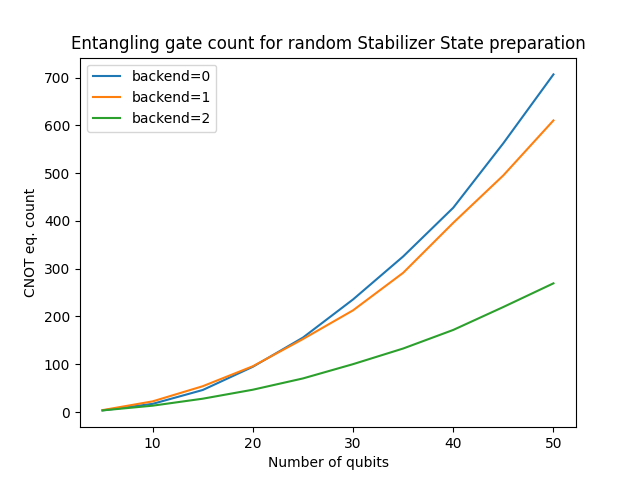

Stabilizer state synthesis
Problem
The problem is the following: given some Clifford operator \(C\), produce a Clifford circuit \(U\) (usually containing CZ/CNOT/H/S gates) such that:
Of course, one usually require \(U\) to be as cheap as possible (in depth or two-qubit gate count).
This problem has application in quantum circuit compilation (it is used for the bi-directional renormalization in the CliffordNormalizer)
plugin for instance.
Interestingly, an algorithm solving this problem can be used to solve another problem: the problem of co-diagonalizing (via a Clifford circuit) a collection of pairwise commuting Pauli operators. The problem is the following: given a collection of Pauli operators \(P_1, ..., P_k\) such that \([P_i, P_j]\) for all \(i,j\), produce a Clifford circuit \(U\) such that :
Indeed, if the \(P_i\) operators commute with one another, they can be expressed as a subset of the stabilizer group of a stabilizer state \(C|0\rangle\), and thus can be linked to the previous problem.
Synthesis
The stabilizer state synthesis problem can solved via the synthesize_stabilizer_state() method.
In Qaptiva, we use the stim library in order to specify Clifford operator. The method support three different backends based. One of them is based
on [CSD20]. The two other methods are based on graph state synthesis, either via a naive approach of via a syndrome decoding appraoch.
from qat.synthopline.co_diagonalization import synthesize_stabilizer_state
from stim import Tableau
clifford_op = Tableau.random(20)
for backend in range(3):
circuit = synthesize_stabilizer_state(clifford_op, backend)
print(circuit.statistics()['gates'])
{'custom gate': 0, 'X': 10, 'H': 47, 'CNOT': 92, 'RX': 39}
{'custom gate': 0, 'X': 7, 'H': 20, 'CSIGN': 96, 'RZ': 9}
{'custom gate': 0, 'X': 10, 'H': 20, 'RZ': 31, 'CSIGN': 27, 'CNOT': 21}
As you can see, the first two methods are quite similar in terms of circuit “cost” (i.e. number of CNOT and CZ gates). The last one seems to perform better. The next section provides additional benchmarks.
This methods can be used to prepare Stabilizer states on constrained hardware. The synthesize_stabilizer_state() method
also accepts as input some set of hardware specs, and, in return, modify the output circuit so that it is hardware compliant.
from qat.devices import GridDevice
from qat.synthopline.co_diagonalization import synthesize_stabilizer_state
from stim import Tableau
specs = GridDevice(4, 5)
clifford_op = Tableau.random(20)
for backend in range(3):
circuit = synthesize_stabilizer_state(clifford_op, backend, specs)
print(circuit.statistics()['gates'])
{'custom gate': 0, 'X': 9, 'H': 38, 'CNOT': 92, 'SWAP': 87, 'RX': 48}
{'custom gate': 0, 'X': 9, 'H': 25, 'RZ': 10, 'CSIGN': 96, 'SWAP': 127}
{'custom gate': 0, 'X': 13, 'H': 25, 'RZ': 34, 'CSIGN': 25, 'SWAP': 80, 'CNOT': 21}
The method uses the qat.plugins.Nnizer plugin in order to modify the circuits (hence the swaps).
Benchmarks
We benchmarked the three backends on random Tableaux of increasing sizes. The results are displayed below (neglecting the deviation). It is quite obvious that the third backend performs better for large state preparations.
